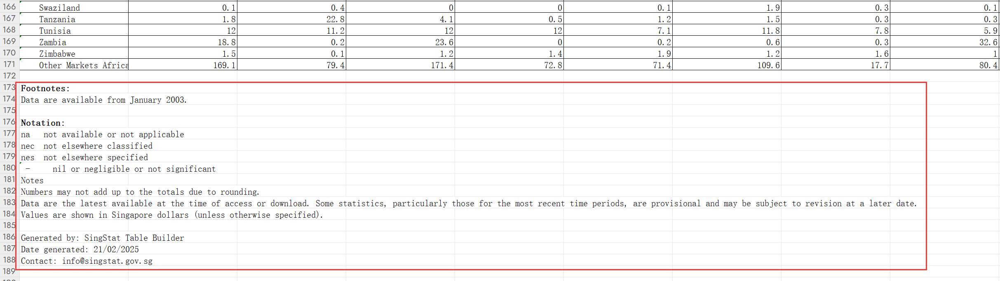
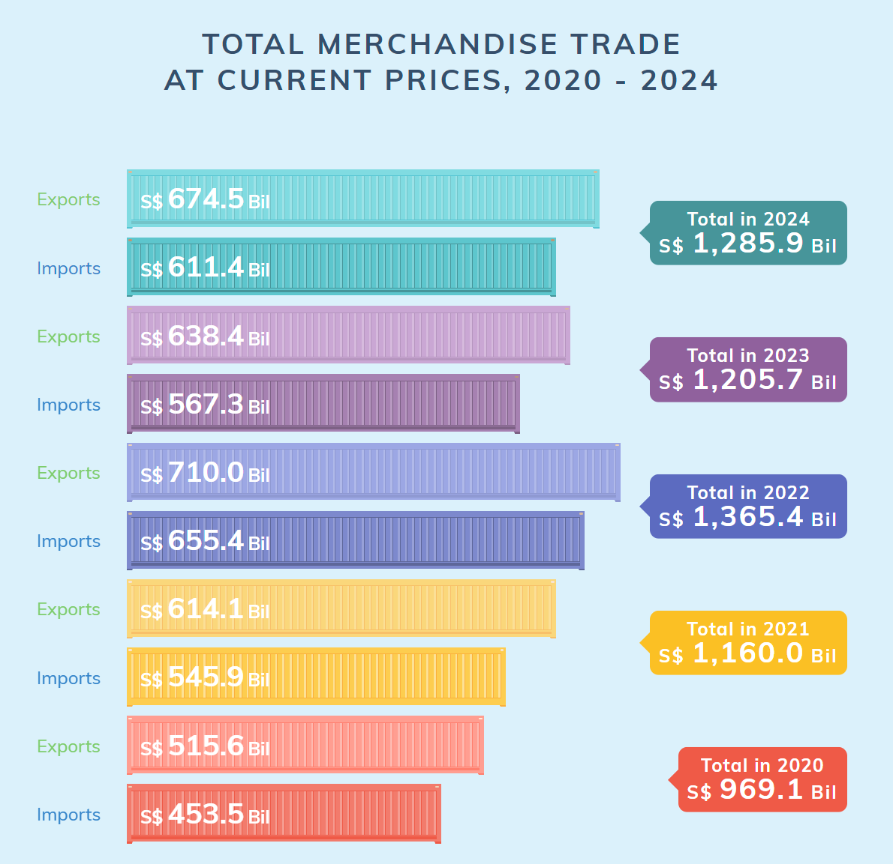
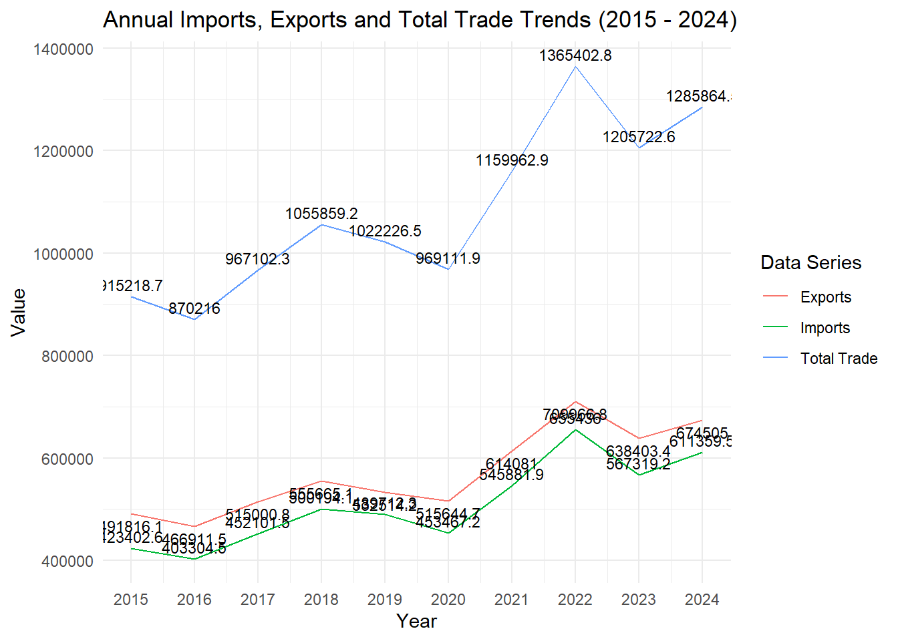

pacman::p_load(readxl, tidyverse, lubridate)Take-home_exercise_2
Trend analysis of Singapore’s international trade since 2015
1 Introduction
1.1 Background
In today’s globalized era, international trade is a key economic topic. Singapore, with its strong financial sector and vibrant port economy, is highly sensitive to global economic changes. As an international financial center and major transshipment hub, its prosperity is closely tied to international trade dynamics.
Globalization brings both opportunities and challenges to Singapore’s trade. Fluctuations in global demand, trade policies, and technological changes impact its trade volume, composition, and direction. Understanding these trends is crucial for policymakers to develop strategies and for local businesses to make decisions.
1.2 Objective
This study focuses on exploring and visualizing Singapore’s international trade data using R. By analyzing historical and current data, we aim to identify patterns, discover trends, analyze the future direction of trade, and suggest improvements to the data visualizations that are now available on the Singapore government website.
2 Data prepare
2.1 Install and launch R packages
123
2.2 Data source
The data is from Merchandise Trade. Department of Statistics Singapore, DOS, which contains two datasets:
1. Merchandise Trade by Region/Market
2. Merchandise Trade by Commodity Section/Division
Dataset 1 contains 3 tables:
| Table Number | Name |
|---|---|
| Sheet 1 | Merchandise Trade By Region And Selected Market (Imports) |
| Sheet 2 | Merchandise Trade By Region And Selected Market (Domestic Exports) |
| Sheet 3 | Merchandise Trade By Region And Selected Market (Re-Exports) |
Dataset 2 contains 10 tables:
| Table Number | Name |
|---|---|
| Sheet 1 | Commodity(At Current Prices) |
| Sheet 2 | Commodity(At 2023 Prices) |
| Sheet 3 | Merchandise Imports By Commodity Division |
| Sheet 4 | Merchandise Imports Of Machinery And Equipment |
| Sheet 5 | Merchandise Exports By Commodity Division |
| Sheet 6 | Merchandise Exports Of Machinery And Equipment |
| Sheet 7 | Domestic Exports By Commodity Division |
| Sheet 8 | Domestic Exports Of Major Non-Oil Products |
| Sheet 9 | Re-Exports By Commodity Division |
| Sheet 10 | Re-Exports Of Machinery And Equipment |
2.2.1 Importing Data
Before importing the data, since there are some descriptive statements in the original table, copy the original table, keep one copy of these descriptions and delete the other to prevent its interference with the R recognition data, and import the table after deleting them.

Imports_data <- read_xlsx("data/outputFile.xlsx", sheet = "T1")Exports_data <- read_xlsx("data/outputFile.xlsx", sheet = "T2")Re_Exports_data <- read_xlsx("data/outputFile.xlsx", sheet = "T3")2.2.2 Checking for duplicates
Imports_data[duplicated(Imports_data), ]# A tibble: 0 × 266
# ℹ 266 variables: Data Series <chr>, 2025 Jan <dbl>, 2024 Dec <dbl>,
# 2024 Nov <dbl>, 2024 Oct <dbl>, 2024 Sep <dbl>, 2024 Aug <dbl>,
# 2024 Jul <dbl>, 2024 Jun <dbl>, 2024 May <dbl>, 2024 Apr <dbl>,
# 2024 Mar <dbl>, 2024 Feb <dbl>, 2024 Jan <dbl>, 2023 Dec <dbl>,
# 2023 Nov <dbl>, 2023 Oct <dbl>, 2023 Sep <dbl>, 2023 Aug <dbl>,
# 2023 Jul <dbl>, 2023 Jun <dbl>, 2023 May <dbl>, 2023 Apr <dbl>,
# 2023 Mar <dbl>, 2023 Feb <dbl>, 2023 Jan <dbl>, 2022 Dec <dbl>, …Exports_data[duplicated(Exports_data), ]# A tibble: 0 × 266
# ℹ 266 variables: Data Series <chr>, 2025 Jan <dbl>, 2024 Dec <dbl>,
# 2024 Nov <dbl>, 2024 Oct <dbl>, 2024 Sep <dbl>, 2024 Aug <dbl>,
# 2024 Jul <dbl>, 2024 Jun <dbl>, 2024 May <dbl>, 2024 Apr <dbl>,
# 2024 Mar <dbl>, 2024 Feb <dbl>, 2024 Jan <dbl>, 2023 Dec <dbl>,
# 2023 Nov <dbl>, 2023 Oct <dbl>, 2023 Sep <dbl>, 2023 Aug <dbl>,
# 2023 Jul <dbl>, 2023 Jun <dbl>, 2023 May <dbl>, 2023 Apr <dbl>,
# 2023 Mar <dbl>, 2023 Feb <dbl>, 2023 Jan <dbl>, 2022 Dec <dbl>, …Re_Exports_data[duplicated(Re_Exports_data), ]# A tibble: 0 × 266
# ℹ 266 variables: Data Series <chr>, 2025 Jan <dbl>, 2024 Dec <dbl>,
# 2024 Nov <dbl>, 2024 Oct <dbl>, 2024 Sep <dbl>, 2024 Aug <dbl>,
# 2024 Jul <dbl>, 2024 Jun <dbl>, 2024 May <dbl>, 2024 Apr <dbl>,
# 2024 Mar <dbl>, 2024 Feb <dbl>, 2024 Jan <dbl>, 2023 Dec <dbl>,
# 2023 Nov <dbl>, 2023 Oct <dbl>, 2023 Sep <dbl>, 2023 Aug <dbl>,
# 2023 Jul <dbl>, 2023 Jun <dbl>, 2023 May <dbl>, 2023 Apr <dbl>,
# 2023 Mar <dbl>, 2023 Feb <dbl>, 2023 Jan <dbl>, 2022 Dec <dbl>, …The result shows no duplicate data.
2.2.3 Check missing values
any(is.na(Imports_data))[1] FALSEany(is.na(Exports_data))[1] FALSEany(is.na(Re_Exports_data))[1] FALSEThe result shows no missing values.
3.1 Comments 1

The contrasting colors of the different years make it easy to identify the data as belonging to different years.
Similar colors are used for imports and exports in the same year, making it easy to identify data from the same year.
The improved sketch is as follows
